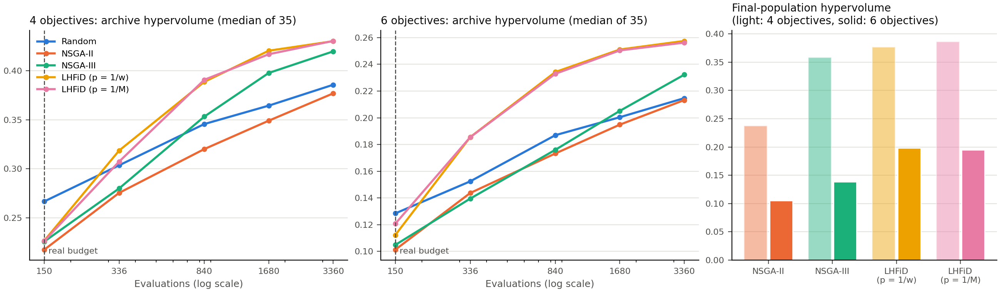
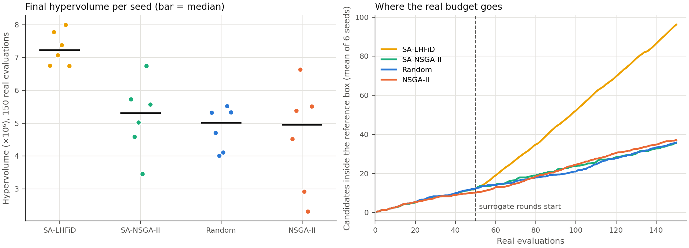

Can a pretrained text-to-image model be made smaller and faster without retraining it, while keeping its images as good? This report explains how we searched for such configurations of Stable Diffusion 1.5, how we measured them, and what held up under pre-registered tests.
A diffusion model starts from pure noise and removes a little of it at every step, calling a 860-million-parameter U-Net each time. The number of steps and the size of that network decide how long an image takes and how much memory it needs. (Illustration, not a real model output.)
Stable Diffusion 1.5 turns a sentence into a 512×512 image. On a 48 GB workstation GPU (an NVIDIA RTX 6000 Ada) one image takes about half a second, 34.7 trillion floating-point operations and 3.3 GB of GPU memory, most of it spent running the same U-Net 20 times. Phones, laptops and embedded boards have far less of everything.
Existing ways to make it cheaper each change one thing:
These knobs interact, and they trade off different things: speed, memory, model size and image quality. Choosing them together is a multi-objective problem, and testing one combination costs about a minute of GPU time, so you cannot try them all.
Goal: use neural architecture search (NAS) and multi-objective evolutionary optimization to find configurations of the frozen Stable Diffusion 1.5 that are smaller and faster than the original while keeping image quality, and validate them against established methods on prompts the search never saw.
Only the released weights. Blocks can be removed or stored in 8 bits, but nothing is fine-tuned or distilled.
Prompt alignment and fidelity to the original model up; latency, compute, peak memory and weight size down.
Same model, prompts, seeds, precision and GPU model for every method. Latency is only compared within one GPU allocation or against a reference measured in the same job.
The final hypotheses, margins and analysis scripts were committed to the repository before their data existed.
A block can be removed without retraining only if its output can be replaced by its input without breaking tensor shapes. In SD1.5 that is true for the 16 attention blocks (they add to a residual stream) and for 8 ResNet blocks whose input and output channel counts match; up-path ResNets merge skip connections and cannot go. We removed each of those 24 units alone and measured the damage on the calibration prompts.
The final search space has 45 genes: the method (plain sampler, DeepCache or a Flexiffusion step schedule), its settings, steps, guidance, one on/off bit for each of the 15 safe units, and the weight precision (16-bit or 8-bit). That is far too many combinations to test exhaustively, which is what the evolutionary search is for.
How well the image matches its caption, scored by a frozen CLIP-L/14 model. Higher is better.
CLIP similarity between the image and the full model's image for the same prompt and seed. Shows how far a configuration drifts.
Median end-to-end time per image (GPU-synchronized) and GFLOPs per image counted by PyTorch.
Peak allocated GPU memory, U-Net parameter count and the U-Net checkpoint size on disk.
We also report KID and FID (distribution distance to real COCO photos and to the full model's images) and count images the safety checker blacks out. All prompts are MS-COCO captions, split so that no image or caption appears in two sets:
Why pre-register? With dozens of configurations and noisy quality scores, some will look better by chance. Writing the hypothesis, the margin and the analysis script down before generating any images, and correcting for multiple comparisons (Holm), means the results below are not chosen after the fact.
The chart shows all 41 Stable Diffusion configurations from the validation job plus the three distilled BK-SDM models, all measured in the same GPU allocation. Hover a point for its details and switch the horizontal axis between speed and model size.
Validation split: 128 unseen prompts × 2 seeds per point. Dashed line: the full model. The full per-run table, with every metric and confidence interval, is in the repository (docs/appendix_validation_table.md).
Nine configurations on 500 brand-new prompts, all in one GPU job. "Non-inferior" means we are 97.5% confident the configuration's CLIP score is at most 0.5 below the full model's.
| Hypothesis | CLIP difference | Holm p | Result |
|---|---|---|---|
| 10-step DDIM, int8, one unit removed (nas_04) is non-inferior to the full model | −0.000 (bound −0.25) | 0.0012 | Supported |
| int8 weights alone are non-inferior | −0.03 (bound −0.16) | 0.0005 | Supported |
| nas_04 beats BK-SDM-small at the same sampler and precision | +1.31 [+0.99, +1.63] | 0.0008 | Supported |
| 6-step DPM-Solver++ (2.8× faster) is non-inferior | −0.39 (bound −0.61) | 0.25 | Not supported |
| nas_04 beats BK-SDM-base at the same sampler and precision | +0.23 [−0.07, +0.51] | 0.25 | Not supported |
| Configuration (500 test prompts) | Latency | GFLOPs | Peak memory | U-Net on disk | CLIP | Fidelity | Black images |
|---|---|---|---|---|---|---|---|
| Full model (20-step DDIM, 16-bit) | 512 ms | 34,672 | 3,271 MB | 1,639.5 MB | 26.89 | 100 | 1 |
| int8 weights only | 631 ms | 34,672 | 2,448 MB | 820.8 MB | 26.87 | 96.1 | 1 |
| nas_04: 10-step DDIM, int8, one unit removed | 325 ms | 18,210 | 2,439 MB | 812.0 MB | 26.89 | 86.9 | 8 |
| Recommended: same without the removal | 334 ms | 18,607 | 2,443 MB | 820.8 MB | 26.99 | 89.0 | 1 |
| DeepCache (20-step DDIM) | 235 ms | 15,431 | 3,380 MB | 1,639.5 MB | 26.76 | 88.7 | 0 |
| BK-SDM-small (10-step DDIM, int8) | 220 ms | 12,759 | 2,075 MB | 461 MB | 25.58 | 80.2 | 3 |
| BK-SDM-base (10-step DDIM, int8) | 233 ms | 13,001 | 2,169 MB | 553 MB | 26.67 | 82.3 | 3 |
Each configuration takes about 40 seconds of GPU time to evaluate on 96 images, so a search gets roughly 150 evaluations in two hours. At that budget, evolutionary search (NSGA-II) was no better than picking configurations at random.
Two reasons emerged. First, the quality signal is noisy: among good configurations, CLIP measured on 96 images agrees with itself across two halves of the prompts with a reliability of only 0.50. Second, many-objective algorithms need more evaluations before their selection pays off. On surrogate models fitted to our 900 real measurements, LHFiD (a many-objective algorithm by Saxena, Mittal, Kapoor and Deb that ranks solutions by how many objectives improve and by how much) beats NSGA-III and NSGA-II, but only after about 336–840 evaluations.

Our method: surrogate-assisted LHFiD (SA-LHFiD). Spend 50 real evaluations on random configurations; then, five times, fit a fast surrogate model to everything measured so far, let LHFiD run 1,680 virtual evaluations on it, and measure the 20 most promising new configurations for real. LHFiD gets the evaluations it needs, and the GPU only runs configurations it has good reason to believe in.
| Real hardware, 150 evaluations, 6 seeds each | Median hypervolume ×10⁶ | Range over seeds | Useful evaluations after the random start |
|---|---|---|---|
| SA-LHFiD (ours) | 7.23 | 6.75–8.00 | 84% |
| Surrogate-assisted NSGA-II | 5.30 | 3.46–6.75 | 23% |
| Random search | 5.02 | 4.02–5.52 | 24% |
| NSGA-II | 4.96 | 2.31–6.63 | 27% |

The surrogate alone is not enough: surrogate-assisted NSGA-II barely beats random search. What works is the combination of a surrogate with a selection rule built for many objectives, and LHFiD was the best such rule we tested.
int8 weights and a 10-step sampler give a 812–821 MB U-Net, 1.53–1.58× speed and non-inferior alignment, with no training.
Safe units interact, removal shifts outputs away from the original model, and on top of int8 it saves little.
CLIP on 96 images cannot rank good configurations (reliability 0.50); fidelity to the original model can (0.96 agreement across splits).
At 150 evaluations nothing beats random search; with thousands, LHFiD leads, more so with more objectives.
Surrogate-assisted LHFiD gives +44% hypervolume over random search at the real budget and spends 84% of its GPU time on useful configurations.
Routing prompts by type to different configurations looked useful until compared with a simple random mix of two configurations at the same average speed.
Next: test SA-LHFiD's configurations on new prompts, check the literature for prior surrogate-assisted LHFiD work, and prepare two papers: the benchmark (2,850 measured configurations with an API) and the SA-LHFiD method.